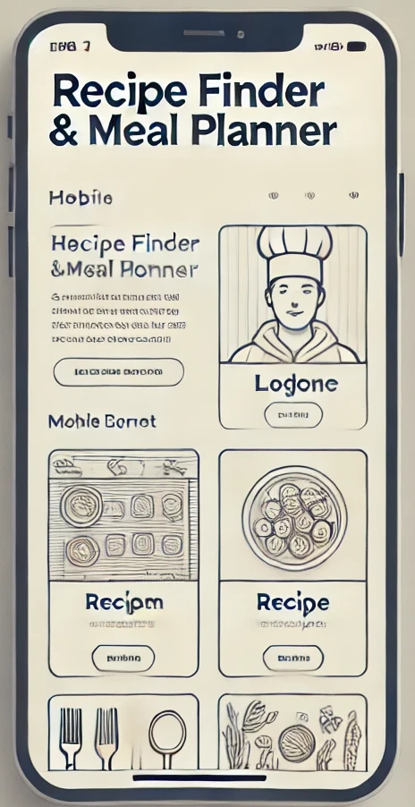
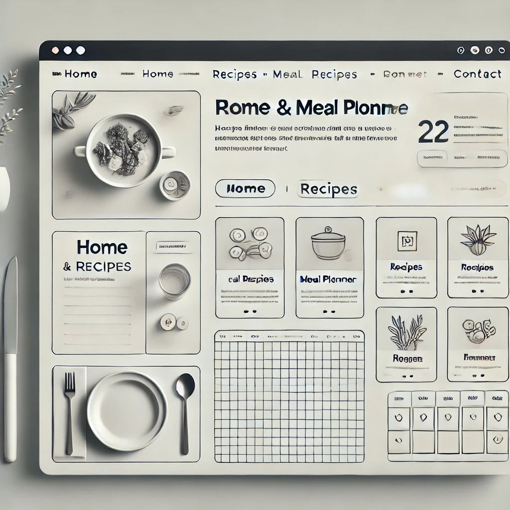

Overview
Site Name
Recipe Finder and Meal Planner
This site name highlights convenience and creativity by allowing users to discover recipes based on available ingredients and build personalized meal plans.
Purpose
The purpose of this site is to help users discover delicious recipes and plan their meals effortlessly. It provides an interactive experience where users can search for recipes, explore detailed cooking instructions, and create personalized weekly meal plans. The site aims to promote convenience and inspire home cooking by offering easy access to a curated selection of recipes and meal planning tools.
Target Audience
Scenarios
Potential User Scenarios:
- What can I cook with the ingredients I have at home?
- How do I plan my meals for the week?
Style Guide
Color Palette
| Primary | Secondary | Accent 1 | Accent 2 |
|---|---|---|---|
| [#E27D60] | [#41B3A3] | [#E8A87C] | [#C38D9E] |
Primary color is used for headings and branding elements, while secondary color is for backgrounds and sections. Accent colors highlight buttons and links.
Typography
Headings: Playfair Display
Body Text: Lato
Playfair Display is chosen for headings to give a classic, stylish look while Lato is used for the body for comfortable readability.
Wireframes
Home Page Wireframe
Mobile View:
Desktop View:
